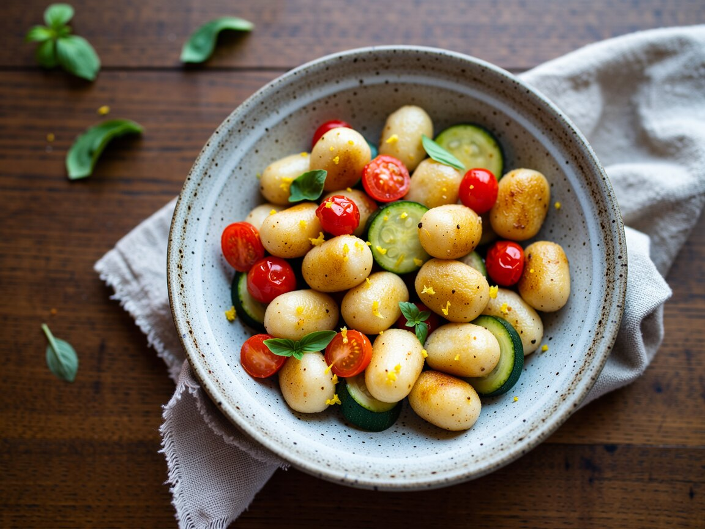

Goldene Gnocchi mit Zucchini und Zitrone
Knusprig gebraten, ganz ohne Kochtopf.
Zutaten
- 800 g Gnocchi aus dem Kühlregal (Zutaten checken: viele sind ohne Ei)
- 1 Zucchini
- 1 Handvoll Kirschtomaten
- 1 Knoblauchzehe
- 1 Bio-Zitrone
- 2 EL Hefeflocken
- 1 Handvoll Basilikum
- 3 EL Olivenöl
- Salz, Pfeffer
So geht's
- Gnocchi ungekocht direkt in der Pfanne im Öl 6 bis 8 Minuten goldbraun braten.
- Zucchini würfeln und mit Knoblauch und halbierten Tomaten 4 Minuten mitbraten.
- Zitronenschale abreiben, mit etwas Saft, Hefeflocken, Salz und Pfeffer unterschwenken.
- Basilikum zupfen und drüberstreuen.
In der Box werden die Gnocchi etwas weicher: Mit einem Schuss Olivenöl und Zitrone sind sie wieder frisch, auch lauwarm lecker.